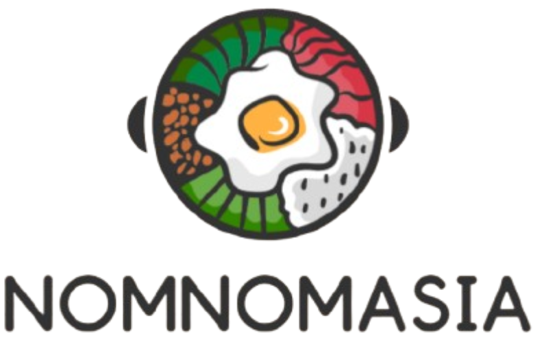

Menu
Satay is a skewered and grilled meat dish served with peanut sauce, originating from Java but popularized in Malaysia. The dish evolved with local spices and marinades, becoming a centerpiece at hawker stalls and night markets. Traditionally served with ketupat (rice cakes), cucumber, and onions, satay is both a street snack and a festive food that represents Malaysia’s multicultural heritage.
Char Kuey Teow is a beloved Malaysian noodle dish fried in a wok with dark soy sauce, prawns, cockles, eggs, and Chinese sausages. It originated from Chinese immigrants, particularly Teochew and Hokkien communities, and became a Penang specialty. The dish embodies the smoky “wok hei” flavor, making it a signature of Malaysian street food culture.
Roti Canai was introduced by Indian Muslim migrants in Malaysia. Its flaky, layered flatbread is made by stretching and flipping dough before frying. Served with dhal curry or meat gravies, it became a national favorite for breakfast and supper. Roti Canai reflects Malaysia’s Indian influence and is enjoyed by all communities.
Laksa is a spicy noodle soup blending Malay and Chinese influences. Variants include Penang Assam Laksa with tamarind fish broth and Curry Laksa with coconut milk. With roots in Peranakan culture, Laksa reflects Malaysia’s history of cultural mixing, and is a dish that varies widely across regions, each claiming their unique style.
Nasi Lemak, Malaysia’s national dish, is fragrant coconut rice served with sambal, fried anchovies, peanuts, cucumber, and egg. It was originally a farmer’s meal for sustaining long hours of work, but over time became a staple dish available from roadside stalls to fine dining. Its balance of flavors makes it iconic across the nation.
Kuih Seri Muka is a two-layered dessert of glutinous rice topped with pandan custard, a Peranakan delicacy. Its bright green top symbolizes prosperity, while its sweet coconut flavor is beloved during festivals and celebrations. This kuih is a testament to Malaysia’s blend of Malay and Chinese culinary traditions.
Sushi originated as a way of preserving fish in fermented rice centuries ago. Over time, it evolved into the fresh, vinegared rice and seafood dish we know today. Popularized in Edo (Tokyo) as street food, sushi became a refined cuisine representing Japanese precision, aesthetics, and respect for seasonal ingredients.
Ramen was introduced from China in the 19th century but was adapted with Japanese flavors like miso, soy, and tonkotsu broth. It grew in popularity post-WWII when wheat became more available. Today, ramen symbolizes Japanese innovation in food culture, with regional varieties like Hokkaido miso and Hakata tonkotsu.
Sashimi, raw slices of fish or seafood, highlights Japanese culinary philosophy of simplicity and freshness. With roots in ancient traditions of eating raw fish, sashimi became an art form where knife skills and fish quality are paramount. It is considered one of Japan’s purest expressions of natural flavor.
Yakitori are skewered chicken pieces grilled over charcoal, seasoned with tare sauce or salt. They became popular during the Edo period as affordable street snacks. Today, yakitori-ya (grill shops) are gathering places where Japanese people enjoy casual meals after work, reflecting the country’s communal dining culture.
Mochi is a chewy rice cake made from glutinous rice, traditionally pounded during New Year ceremonies. It symbolizes prosperity and good fortune. Over centuries, mochi evolved into many varieties, filled with sweet or savory ingredients, and became a beloved snack during festivals and celebrations across Japan.
Onigiri, rice balls often wrapped in seaweed, date back to the 11th century as portable meals for travelers and soldiers. Simple yet versatile, they are filled with ingredients like salted salmon or pickled plum. Today, onigiri is a staple in Japanese lunchboxes and convenience stores, embodying comfort and practicality.
Peking Duck, a dish dating back to the Ming dynasty, is renowned for its crispy skin and tender meat. It was once served exclusively to royalty but became widely available in Beijing restaurants. Traditionally wrapped in thin pancakes with scallions and hoisin sauce, it represents China’s rich culinary heritage.
Kung Pao Chicken originated in Sichuan province and is known for its balance of spicy, sweet, and savory flavors. Named after a Qing Dynasty official, the dish features stir-fried chicken, peanuts, and chilies. Its spread worldwide reflects the adaptability of Chinese cuisine to local tastes.
Sweet and Sour Pork is a Cantonese classic featuring battered pork in a tangy sauce of vinegar, sugar, and ketchup. Developed in Guangzhou, it became one of the first Chinese dishes exported overseas. Its vibrant colors and bold flavors symbolize the creativity of southern Chinese cooking.
Hot Pot originated in northern China over 1,000 years ago, where diners cook meats and vegetables in simmering broth. It became especially popular in Sichuan with the addition of spicy chili-laden broths. Hot pot is more than a meal; it is a social tradition emphasizing sharing and togetherness.

Dim Sum, meaning “touch the heart,” began in southern China’s tea houses along the Silk Road. Small bite-sized dishes like dumplings and buns were served to accompany tea. Today, dim sum is a cultural ritual where families gather for leisurely brunch, enjoying dozens of dishes together.

Dumplings are one of China’s oldest foods, dating back over 1,800 years to the Han dynasty. Originally eaten during winter for warmth, they symbolize wealth and family reunion, especially during Lunar New Year. Their variations, from boiled to pan-fried, reflect China’s vast regional diversity.

Cha Ca La Vong is a Hanoi specialty of grilled turmeric-marinated fish with dill and peanuts, cooked tableside. Its origins date back to the 19th century when a family served the dish to anti-colonial fighters. It became so famous that an entire street in Hanoi was named after it.

Xoi, or sticky rice, is a traditional breakfast in Vietnam, served savory with mung beans and meat or sweet with coconut and peanuts. It reflects Vietnam’s agrarian roots and is still enjoyed daily. Xoi connects generations through its comforting simplicity and adaptability.

Pho is Vietnam’s national noodle soup, believed to have originated in Hanoi in the early 20th century under French colonial influence. Combining rice noodles, fragrant broth, and beef or chicken, pho became a unifying comfort food across Vietnam and a global symbol of Vietnamese cuisine.

Pho Cuon is a modern Hanoi invention where wide rice noodles are rolled with beef and herbs, then dipped in tangy sauce. Unlike hot pho, this fresh dish highlights Vietnam’s creativity in adapting traditional ingredients into new forms. It is now a popular snack in northern Vietnam.

Bun Cha is a Hanoi dish of grilled pork served with vermicelli noodles, fresh herbs, and dipping sauce. It dates back to the early 20th century and gained worldwide fame when President Obama dined on it during his visit to Vietnam. Bun Cha reflects Vietnamese love for balance in flavors and textures.

Banh Mi is a Vietnamese sandwich born from French colonial influence, where baguettes were filled with local ingredients. Over time, it evolved into a street food icon combining pâté, pickled vegetables, meats, and chili sauce. Today, Banh Mi represents Vietnam’s ability to merge global and local flavors into one perfect bite.